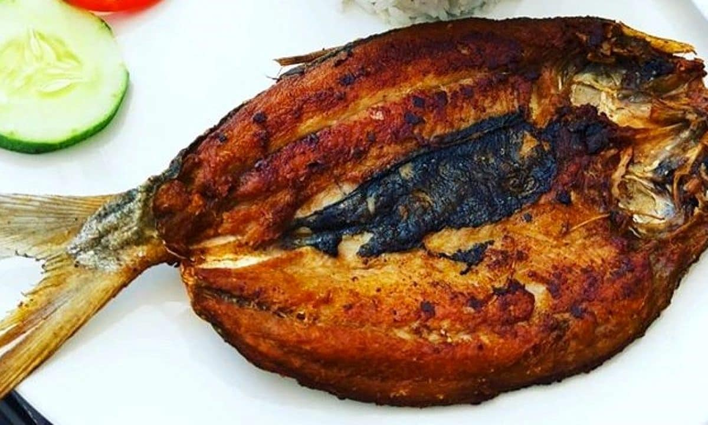

Fried Bangus Recipe

Ingredients:
- 1 whole bangus (milkfish), cleaned and butterflied
- 1/2 cup vinegar
- 4 cloves garlic, minced
- 1 tsp salt
- 1/2 tsp black pepper
- 1/2 tsp soy sauce
- 1/2 cup cooking oil (for frying)
Instructions:
- In a bowl, mix vinegar, garlic, salt, black pepper, and soy sauce.
- Marinate the bangus in the mixture for at least 1 hour.
- Heat oil in a pan over medium heat.
- Fry the bangus skin side down first until crispy and golden brown.
- Flip and fry the other side until cooked through.
- Drain excess oil on paper towels.
- Serve hot with rice and dipping sauce. Enjoy!
Back to Menu